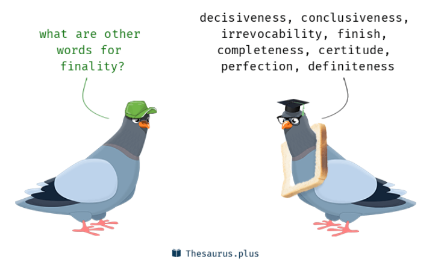

原文：Practical Guide to Finality (smsunarto.com)
注意 finality 国内有很多种翻译，如最终性、终结性、确定性等等，本文统一翻译为确定性。
给忙碌人士的区块链确定性指南

区块链确定性入门
确定性是什么？
当你去超市购物，你可能发现过一句话：“ 货物出售，概不退换”（all sales are final）。如果你看到这句话，就意味着你买的任何东西都不能退换或者取消。这也是区块链环境下确定性的本质。本质上，确定性是一个意味着区块链交易不能被逆转的时间点。那么什么是非确定性呢？
包含到区块中的交易不一定是确定性的。 这是区块链精神领袖们在Twitter上争论区块链有多快时常见的用词不当。什么时候是确定性的，现在我们到了棘手的部分。我们如何才能知道我们的交易确定了？不幸的是，没有一个正确答案。正确答案是：它取决于区块链的设计架构。这是我们接下来要深入探讨的问题。
Flavors of Finality 初识确定性？
概率确定性
假设你去咖啡厅使用信用卡支付早上的拿铁，你的信用卡付款确定了吗？答案是没有，严格来讲，你仍可以退款。然而，客户一直为这种小额支付退款的几率有多大呢？非常小。所以咖啡厅不会叫你回来等到支付真正确定了再走。这就是以太坊比特币等基于Nakamoto 共识（PoW）的区块链的确定性。
为了更好的理解，我们需要引入分叉选择规则（fork choice ）的概念。分叉选择规则是指当区块链分叉发生时，区块链客户端确定哪个分叉正确时依据的规则。在Nakamoto共识中，分叉选择规则是最长链是权威链（最长链规则）。现在，你可能发现一个小问题：如果有人创造一个将原来链上交易都逆转的更长链怎么办？哦！我们刚刚发现了51%攻击，它会导致链的重组。
注意：链的重组不止发生在51%攻击期间，因为各种原因，如网络延迟或者无意识的区块打包竞争，1-2个区块的重组在以太坊上每天都会发生。这可能听起来有一点问题。幸运的是，区块越老（区块高度越小），其中包含的交易就越难被逆转。这是因为攻击者需要花费更多时间和资源来维持51%算力来超过当前区块高度。btw，这也是为什么中心化交易所在你的余额存进账户前需要等待X个确认的原因。然而，只有在不是即时确定的区块链上需要做这个，下面我们看看即时确定性区块链。
译者注：比特币就是概率确定性，在中本聪的论文原文中，他证明了6个块以后，交易被逆转的概率极低，可以被认为无法逆转，这也是交易要等待1个小时左右确认的原因（平均10分钟一个块，一个小时刚好6个块）。
即时确定性/single - slot 确定性
我实在不知道怎么翻译这个single - slot ····单槽？
相对于Nakamoto共识，基于实用拜占庭容错（Practical Byzantine Fault Tolerance，PBFT）的共识如Tendermint是即时确定性。交易执行完就是确定的。你不能说服在线的全节点逆转交易。注意：这里的关键词是在线。大多数权益证明（PoS）区块链都是弱主观性，当他们第一次加入网络上线或者长时间离线后上线时需要他们信任一个节点来确定权威链。弱主观性需要单独一篇博文讨论。基于PBFT的共识需要依赖2/3的验证者验证提出的区块。如果大于1/3拜占庭参与者存在，区块链将会陷入瘫痪（grind to a halt）。然而，如果2/3拜占庭参与者，恶意的区块就可以强制进入区块链上。注意：根据一般经验（as a general rule of thumb），非恶意全节点将会继续拒绝那些恶意的区块，并且执行社会共识（social consensus）驱动的分叉。不幸的是，随着验证者数量的增加，PBFT有不可忽略的开销。具体来说，随着验证者数量增加，收集2/3个节点的正确验证来使区块确定过程中，网络roundtrip也会线性增加。因此，每一个区块将会花费更多的时间来达成确定性。这就是为什么基于PBFT的共识的区块链去中心化程度有实际的限制（即可扩展性scalability）。例如，大多数基于Tendermint的区块链只有100-150个验证者，这样做是为了在确定性达成时间与去中心化程度之间达成平衡。最重要的部分是：较少的验证者并不意味着更差的安全性。事实上（as a matter of fact），PBFT对安全性（Safety）的要求高于活性（Liveness）(Tim Roughgarden的CAP理论讲座更详细的解释了这一点)。如果共识失败，PBFT共识将会停止而不是继续错误运行。相比之下，Nakamoto共识将会继续错误运行（即网络分区）。有一点需要考虑：为什么对于像Bitcoin这样的网络活性要求高于安全性？
？？？你说的single slot呢
Ethereum 2.0’s Multi-slot Finality
以太坊共识从PoW到PoS的转变也将会带来从概率确定性到绝对确定性的转变。然而，相对于PBFT的即时确定性，以太坊2.0选择了一个更慢的确定性来支持更多的验证者。相对于基于PBFT的共识（如Tendermint）需要对每个块有2/3的验证，以太坊2.0使用一个名为Casper FFG的小工具，为每64个slot（32slot * 2 epoch）提供确定性，这大概需要13分钟。
懂了，所谓的single slot就是指一个区块上链后就是确定的，multi slot finality是指多个区块上链后前面的才是确定的。multi slot finality 跟 probabilistic finality还不一样，二者都是多个区块上链后才达成确定性，但是probabilistic finality还有逆转的可能，而multi slot已经是确定了，不能逆转。
Rollup Finality
随着rollup的兴起，我不可能在写这篇文章时不将rollup包含进来！首先，一个单一的sequencer rollup（也就是现在rollup的做法）就类似是单个中心化服务器，意识到这一点很重要，这就是他们如此快速的原因。也就是说，允许他们继承以太坊安全性的是确保状态转换正确性的机制，这有以下两种情况
Optimistic Rollup
在Optimistic Rollup（ORU）中，sequencer被假定是正确的除非通过防欺诈证明证明他是错的。如果有人发现sequencer是恶意的，他们可以在挑战阶段上传一个防欺诈证明，那么错误的rollup的状态会被推翻。目前的ORU如Optimistic或者Arbitrum的挑战阶段时常为1周，这也决定了他达成确定性的时间。
ZK Rollup（Zero-Knowledger Rollup）
处于一些原因，关于ZK Rollup达成确定性所需的时间没有太多的讨论，尽管我觉得非常有趣。在ZK Rollup（ZKRU），达成（可验证）确定性的时间取决于ZK prover生成对交易的证明、提交状态更新、交易数据以及base链上证明的速度，这里一个不太明显的现象是，由于这个过程也涉及向base链写数据，我们也必须在上面加上以太坊base链的确定性时间。当前，尽管高度并行可以明显提高效率，ZK证明仍非常慢。这是当前ZKRU的瓶颈，它目前是由风险资金补贴以弥补差距。最终，随着ZK证明技术成熟，其中确定性的瓶颈也会最终从证明转到base链的确定性（例如以太坊）。重要的是要注意，尽管sequencer理论上在繁重负载下执行没有问题，但ZK prover可能很难跟上速度。不幸的是，这意味着，在网络拥塞时完成确定性的时间会很长。这就是为什么在考虑ZK 证明经济型的ZKRU中设置合适的fee 市场至关重要。otherwise, it will be like Solana 2: Electric Boogaloo.????不懂
为什么确定性很重要
确定性很重要最大的原因是用户体验，想象一下，将加密货币存入CEX（centralized exchange，中心化交易所）或者使用它购买咖啡，如果某区块链很长时间达成确定性，你可能必须等待比想象中更长的时间。也就是说，用户和开发者总是可以达成妥协，并确定一个最够好的确定性时间点。例如，一个ORU可能一个周不能达成确定性，但是一个交易所如果相信sequencer的状态转换是有效的，他们会希望尽早结算，达成确定性。
注意： 这也可能是危险的做法！如果交易所已经结算一大笔存款后，ORU回滚交易，那么交易所可能赔的身无分文。当心这种做法，除此之外，bridging（这是啥？跨链桥？） 也严重依赖确定性？这是因为跨链桥必须等待直到他们相信在当前链上做出相应改变之前，原始链上的跨链交易不会被逆转。对于rollup，他们当前达成确定性所需时间过长，这对于想要桥接到base链上的用户来说是一种阻碍。这很大地影响了那些假设你会经常桥接到另一个链/rollup的特定应用rollup的实用性。尽管你可以使用economic bridge（例如 Hop）来缓解这个问题，但他并不是一个高招（tl;dr reliance on economic value + liquidity fragmentation. 依赖于经济价值+流动性碎片化？不懂:disappointed:）。相比之下，受益于Tendermint 的即时确定性，Cosmos区块链享有无缝的桥接体验，因此成为特定应用的优选。最后，确定性对于MEV(Maximal Extractive Value）抗重组性也是至关重要的。MEV的更多细节看这
总结
总的来说，这篇文章讲了bitcoin的概率确定性，PBFT的即时确定性，ethereum2.0的multi-slot确定性，以及rollup的确定性，最后分析了确定性重要的原因。
区块链的确定性取决于区块链的设计，基于PoW的确定性是概率确定性，上链后一个小时极大概率是确定的，但仍有回滚、重组的可能；基于PBFT共识的区块链的确定性是即时的，只要达成共识上链，那么就是不可逆转的。而以太坊2.0 The Merge 从PoW转到PoS后，确定性也变了，在beacon chain信标链中，每12s出一个区块，这12s叫一个slot，32个slot组成一个epoch（为什么是32？别问，问就是不知道。lucky number?），所以一个epoch大概是6 m 24 s。在一个slot中，会有一个proposer 和 一个validator committee，proposer在4s内生成一个区块，发送给committee 收集 BLS签名，validator验证后会广播attestation出去。32个slot之后，会验证是否有2/3的stake（不是节点）投票，满足则这个epoch就是有效的，如果下一个epoch有效，那么当前epoch就是finality。需要两个epoch，时间大概是12 m 48 s，因此以太坊的Finality不是instant finality， 也不是 probabilistic finality，而是一种slower finality。详细参考ethereum fundamentals: time, slot and epochs。关于Rollup，他是以太坊扩容方法中最被看好的一种方法，现在分为Optimistic rollup 和 ZK rollup，ORU是指对提出的区块做出乐观假设，除非一段时间内有节点对交易正确性提出挑战，否则认为正确上链，如果被挑战成功，则提出rollup的节点会被惩罚，以此来保证正确性。而一段时间内没有挑战则确定，因此它的确定性取决于允许挑战的时间。ZK rollup则事先生成zk proof，他能保证上链的区块就是正确的，但他的瓶颈在于现阶段ZK proof的生成及其耗时，因此效率也较低。
Finality不仅关乎效率，更关乎安全，若对Finality过于乐观，会导致交易重组、双花等问题。若严格按照Finality，则效率太低。
关于Rollup的了解不多，有很多词不知道怎么翻译···了解了回来补上。